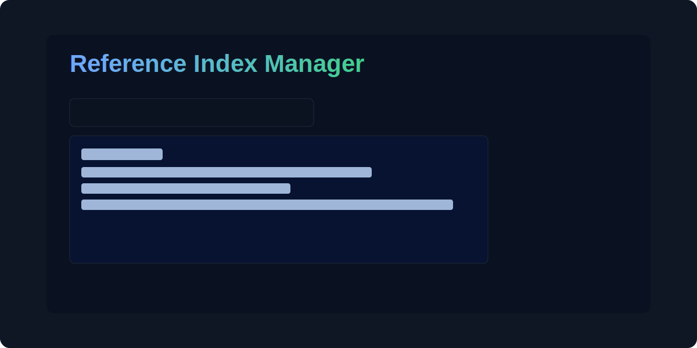

Reference Index Manager
Importa Excel/TSV, renumera referencias, copia entradas y exporta. Puedes seleccionar este texto sin que te redirija.
Abrir herramientaSelecciona una herramienta para abrirla en la ventana completa.
Importa Excel/TSV, renumera referencias, copia entradas y exporta. Puedes seleccionar este texto sin que te redirija.
Abrir herramienta